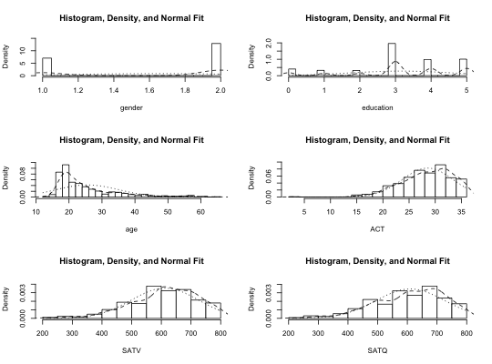
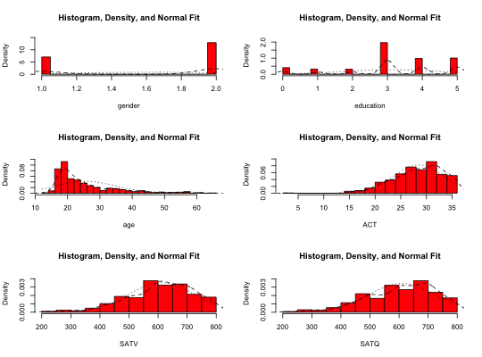
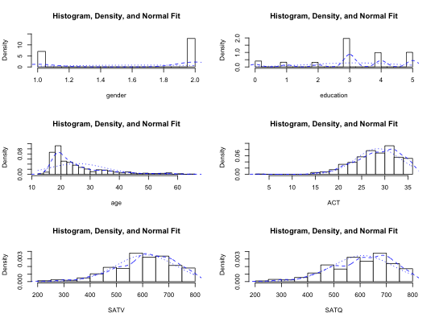
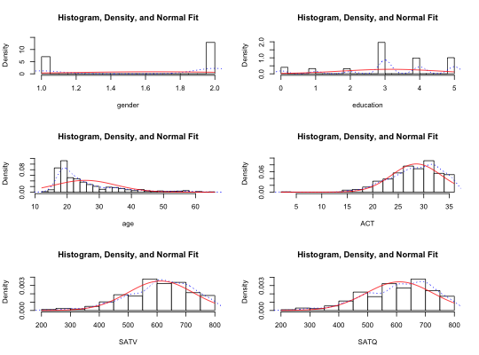
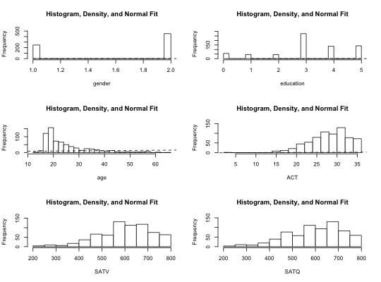
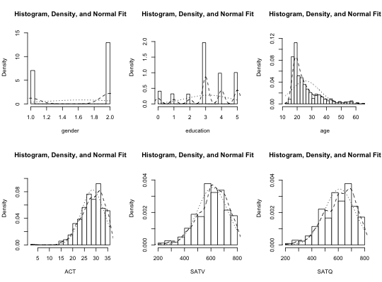
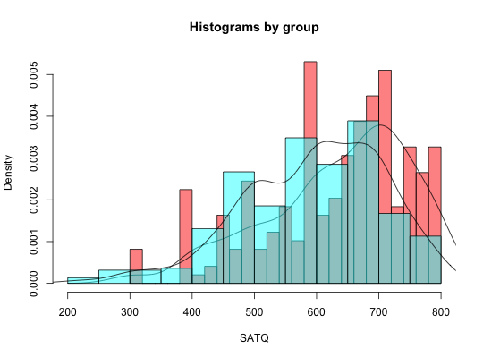

Given a matrix or data.frame, produce histograms for each variable in a "matrix" form. Include normal fits and density distributions for each plot.
The number of rows and columns may be specified, or calculated. May be used for single variables.
multi.hist(x,nrow=NULL,ncol=NULL,density=TRUE,freq=FALSE,bcol="white", dcol=c("black","black"),dlty=c("dashed","dotted"), main="Histogram, Density, and Normal Fit",breaks=21,...) histBy(x,var,group,density=TRUE,alpha=.5,breaks=21,col,xlab, main="Histograms by group",...)
| x | matrix or data.frame |
|---|---|
| var | The variable in x to plot in histBy |
| group | The name of the variable in x to use as the grouping variable |
| nrow | number of rows in the plot |
| ncol | number of columns in the plot |
| density | density=TRUE, show the normal fits and density distributions |
| freq | freq=FALSE shows probability densities and density distribution, freq=TRUE shows frequencies |
| bcol | Color for the bars |
| dcol | The color(s) for the normal and the density fits. Defaults to black. |
| dlty | The line type (lty) of the normal and density fits. (specify the optional graphic parameter lwd to change the line size) |
| main | title for each panel |
| xlab | Label for the x variable |
| breaks | The number of breaks in histBy (see hist) |
| alpha | The degree of transparency of the overlapping bars in histBy |
| col | A vector of colors in histBy (defaults to the rainbow) |
| ... | additional graphic parameters (e.g., col) |
bi.bars for drawing pairwise histograms
multi.hist(sat.act)multi.hist(sat.act,bcol="red")multi.hist(sat.act,dcol="blue") #make both lines bluemulti.hist(sat.act,dcol= c("blue","red"),dlty=c("dotted", "solid"))multi.hist(sat.act,freq=TRUE) #show the frequency plotmulti.hist(sat.act,nrow=2)histBy(sat.act,"SATQ","gender")